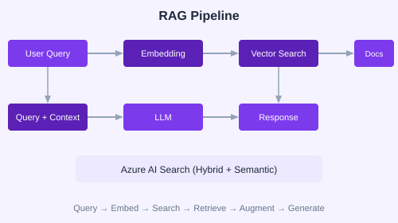

Retrieval-Augmented Generation (RAG) combines information retrieval with LLM generation. The model queries a knowledge base, retrieves relevant chunks, and generates answers grounded in those chunks.

Documents are split into chunks, each chunk is converted to a vector embedding using an embedding model, and stored in a vector index.
from azure.ai.inference import EmbeddingsClient
embeddings = EmbeddingsClient(endpoint="...", credential=cred)
response = embeddings.embed(
model="text-embedding-3-small",
input=["Azure AI Foundry is a unified AI platform."]
)
vector = response.data[0].embeddingfrom azure.search.documents import SearchClient
from azure.search.documents.indexes import SearchIndexClient
# Create index
index_client = SearchIndexClient(endpoint, credential)
index_client.create_index(index_definition)
# Search with hybrid + semantic
search_client = SearchClient(endpoint, "docs-index", credential)
results = search_client.search(
search_text="What is Foundry?",
query_type="semantic",
vector_queries=[{ "vector": query_vector, "fields": ["content_vector"] }],
top=5
)Extend RAG to handle images, tables, and PDFs. Use Document Intelligence to extract content from documents before chunking and indexing.
Use Bicep or Terraform to provision: